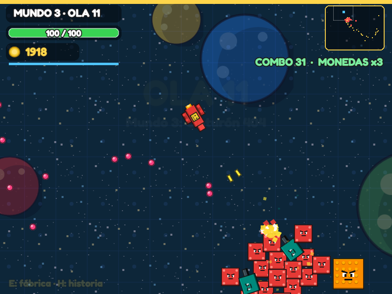
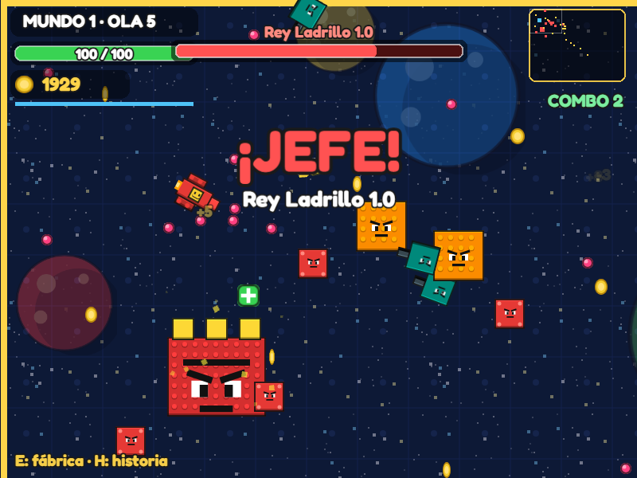
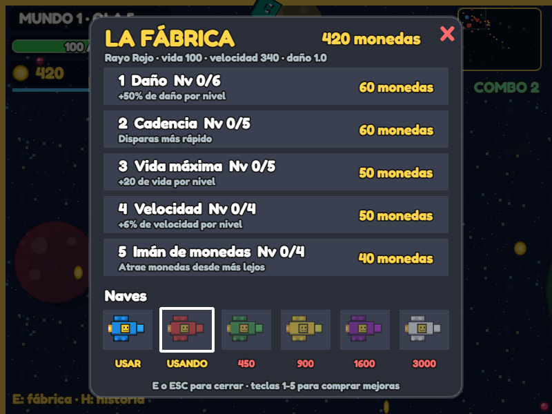
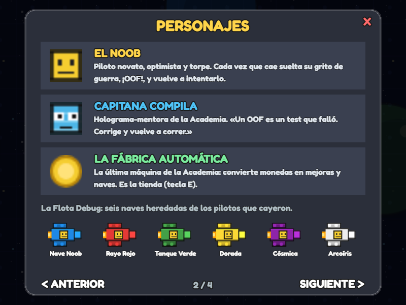

El Noob
Piloto novato, optimista y torpe. Cada vez que cae suelta su grito de guerra, «¡OOF!», y vuelve a intentarlo.
Shooter de naves · Phaser 3
Un piloto noob, armado con una nave hecha de ladrillos, debe frenar al enjambre de Ladrillos Corruptos antes de que el Rey Ladrillo convierta toda la galaxia en un error 404.
Gratis · en tu navegador · teclado o pantalla táctil

El alma del juego
La Baseplate Galáctica era un universo perfecto, construido ladrillo a ladrillo por el Maestro Brick. Un viernes a las 5:59 de la tarde, el Maestro pulsó DEPLOY sin probar nada. «Funciona en mi computadora», dijo.
Así nació el Glitch, un error que corrompe cada ladrillo y le pinta una cara de enojado. El Maestro quedó atrapado en la infección y se transformó en el Rey Ladrillo. La Academia de Pilotos Debug cayó y los veteranos se rindieron, porque querían ganar a la primera.
Solo queda un alumno en el hangar: el Noob, el peor de su promoción. Tiene una nave de ladrillos y una idea simple: fallar, aprender, mejorar y volver a intentarlo.
Piloto novato, optimista y torpe. Cada vez que cae suelta su grito de guerra, «¡OOF!», y vuelve a intentarlo.
Holograma-mentora de la Academia. «Un OOF es un test que falló. Corrige y vuelve a correr.»
La última máquina de la Academia: convierte las monedas en mejoras y en naves nuevas, sin descanso y sin preguntas.
El Maestro Brick corrompido por el Glitch. Cada 5 olas aparece en una versión nueva, desde la 1.0 hasta la v∞.
«Nadie gana a la primera. Gana quien vuelve a intentarlo con lo aprendido.»Capitana Compila
Características
Seis naves de la Flota Debug, cada una con su historia, su velocidad y su forma de disparar.
Cuatro tipos de Ladrillos Corruptos y un jefe cada 5 olas, a lo largo de cinco mundos.
Gasta tus monedas en cinco mejoras (daño, cadencia, vida, velocidad e imán) o en naves nuevas.
Cuando caes conservas monedas y mejoras. Cada intento te deja más fuerte que el anterior.
Todo el sonido se sintetiza en tu navegador y la música gana capas a medida que avanzas.
Funciona en el navegador, con teclado o con la pantalla táctil de tu celular.



Cómo jugar
| Acción | Teclado | Pantalla táctil |
|---|---|---|
| Mover | ← ↑ → ↓ o W A S D | Arrastrar el dedo |
| Dash (invulnerable un instante) | Espacio | Botón DASH |
| Disparar | Automático: la nave apunta sola al ladrillo más cercano | |
| La Fábrica (tienda) | E (teclas 1 a 5 compran mejoras) | Botón $ |
| Historia y personajes | H | Texto «H» del menú |
| Silenciar | M | — |
Los Ladrillos Corruptos
Los enemigos tienen nombre de error real de software. Si los ignoras, se multiplican.
Te persigue a todas partes. Se rompe al tocarte, pero duele.
En software: un defecto pequeño que se ignora hasta que se multiplica.
Muy veloz: llega antes de que termines de pensar.
En software: un fallo que depende de quién llega primero.
Te dispara desde lejos mensajes que nadie pidió.
En software: notificaciones y correos no deseados.
Parece lento, pero aguanta muchos disparos y cada vez pesa más.
En software: el atajo de hoy se paga con intereses mañana.
Las reglas del mundo real
Clasificación E: apto para cualquier piloto con pulso. Contiene violencia de dibujos animados dirigida exclusivamente a ladrillos con cara de enojados, destellos breves y referencias a desplegar un viernes sin pruebas.
Muro de Honor
| Recurso | Quién | Licencia | Uso |
|---|---|---|---|
| Phaser 3 | Phaser Studio Inc., Richard Davey y colaboradores | MIT | Motor del juego |
| Fredoka | Milena Brandão y colaboradores | SIL Open Font License 1.1 | Tipografía |
| jsDelivr | Red de entrega gratuita (CDN) | Servicio gratuito | Entrega de Phaser |
| GitHub Pages | GitHub | Servicio gratuito | Alojamiento de esta página |
| Arte, efectos y música | Creados por el equipo, con código | Propios: no hay archivos de terceros | Naves, ladrillos, planetas y sonido |
| Diseño, lore y programación | Luis Guerrero | Proyecto estudiantil | Todo el juego |
| Asistencia con IA | Claude (Anthropic) | — | Ayuda en programación y redacción |